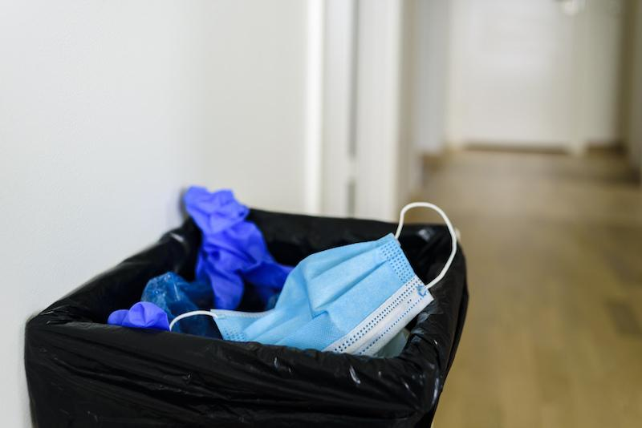
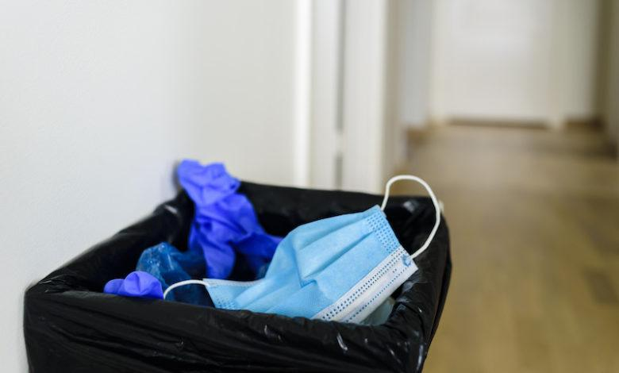
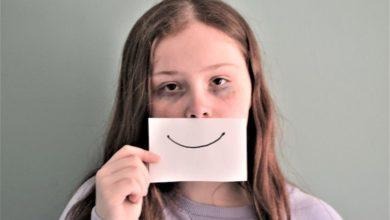

Минздрав Канады выявил токсичность китайских масок

Медицинские маски, сделанные в Китае, могут быть опасными для человеческого организма.Об этом заявило Министерство здравоохранения Канады.При постоянном ношении серых или голубых масок китайского производства в организм человека попадают микрочастицы, которые могут привести к нарушению работы легких.(Портал «Швейцария Деловая»)
Министерство здравоохранения Канады постановило приостановить использование медицинских масок стандарта SNN200642, сделанных в Китае.Последние, в частности, носят дети – учащиеся в школах и детских садах Квебека.
«Если у вас есть такая маска, пожалуйста, прекратите ее распространение», – говорится в приказе ведомства, который оказался на руках у канадского телерадиовещателя Radio Canada.
Маски серого и синего цвета при постоянном ношении могут привести к легочной токсичности, что влечет за собой риск преждевременного повреждения легких.Об этом свидетельствуют результаты предварительной оценки канадского министерства.
Причина – вдыхание микроскопических частиц графена.Это модифицированный углерод, который используют в производстве масок.Интоксикация может нанести вред легким и вызвать долгосрочные проблемы со здоровьем, пришли к выводу в министерстве.
Отметим, что это не первое доказательство вреда обязанности носить маски.Согласно исследованию немецкого журнала Kinderheilkunde, две трети детей в Германии испытывают проблемы со здоровьем из-за постоянного ношения маски.
Posted On: 2021-04-04T23:00:00




Content Date: 2021-04-04
Download Date: 2021-04-21
Document ID: L0C04AO7E